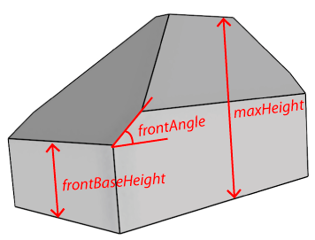
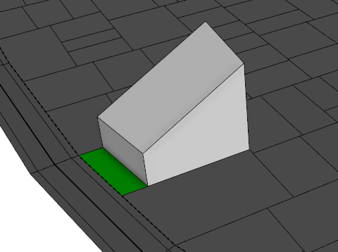

envelope
Synopsis
envelope(direction, maxHeight, frontBaseHeight, frontAngle)
envelope(direction, maxHeight, frontBaseHeight, frontAngle, backBaseHeight, backAngle)
envelope(direction, maxHeight, frontBaseHeight, frontAngle, backBaseHeight, backAngle,
sideBaseHeight, sideAngle)
envelope(direction, maxHeight, frontBaseHeight, frontAngle, backBaseHeight, backAngle,
rightBaseHeight, rightAngle, leftBaseHeight, leftAngle)
Parameters
- direction (selstring)
Direction along which the envelope is errected (normal | world.up). - maxHeight (float)
Maximum height of the envelope in meters. If this height is reached, the volume is cut and sealed horizontally. - frontBaseHeight (float)
Base height of the front sides in meters. - frontAngle (float)
Slope angle of front sides in degrees. - backBaseHeight (float)
Base height of the back sides in meters. - backAngle (float)
Slope angle of back sides in degrees. - sideBaseHeight (float)
Base height of both the right and left sides in meters. - sideAngle (float)
Slope angle of both the right and left sides in degrees. - rightBaseHeight (float)
Base height of the right sides in meters. - rightAngle (float)
Slope angle of right sides in degrees. - leftBaseHeight (float)
Base height of the left sides in meters. - leftAngle (float)
Slope angle of left sides in degrees.
 Creates a building envelope above each face of the current shape's geometry.
Each edge of the face is classified according to the street.front, street.back, street.right, street.left, street.side
selectors. Sides with the according baseHeights are then built perpendicular to the face.
Finally, sloped planes are added at the top of each side, with the according slope angle.
Creates a building envelope above each face of the current shape's geometry.
Each edge of the face is classified according to the street.front, street.back, street.right, street.left, street.side
selectors. Sides with the according baseHeights are then built perpendicular to the face.
Finally, sloped planes are added at the top of each side, with the according slope angle.
Evaluation of the street.xxx selectors is based on the streetWidth attribute, see Auto-generated street width attributes. If the attribute is not available, component selection falls back to the object.xxx selectors.

Basic envelope() operation parameters. The baseHeight and angle parameters of the other sides are analogue.

Example of street.front, street.back, street.right, street.left, street.side selectors applied on a lot of a block (with auto-generated streetWidth attributes).
Related
- extrude operation
- offset operation
- roofGable operation
- roofHip operation
- roofPyramid operation
- roofShed operation
- taper operation
Examples
Street-facing Slope
Lot-->
setback(10) { street.front : color(0,1,0)
FrontYard |
remainder : Building }
Building-->
envelope(normal, 50, 15, 30)
|
|  |
| The example code above creates a building envelope with a slope of 30 degrees facing the street-side. Eave height is 15 meters. Before creating the envelope, a front yard of 10 meters is split from the lot using the setback operation in conjunction with the street.front selector. |
Copyright ©2008-2016 Esri R&D Center Zurich. All rights reserved.